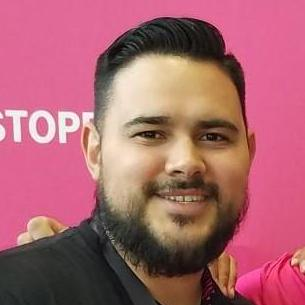

 My name is Rodolfo Soto Jr. I am from Chicago, Illinois and I am first generation Mexican-American. I went to a private school my entire life and graduated from high school in 2005. After high school I did attend UIC for one semester but I was working full time at UPS. I thought I found the place I was going to work for the rest of my life but things changed and I changed. I decided to stop going to school and focus on my career. I spent six years of my life at UPS before I made the decision to go back to school in 2010.
I enrolled at Richard J. Daley College in the summer of 2010. Since I decided to focus on school, I quit UPS after recently getting a promotion. I got a part time job at T-Mobile in retail while I was attending Daley full time. I was taking as many classes I was allowed to as well as taking summer classes. Needless to say, I graduated from Daley in 2012 with an Associates in Science of Engineering. I used my degree to get my foot in the door in the engineering field. Currently, I still work for T-Mobile but I have been on the engineering side for over four years now. I am a field technician working on the T-Mobile's network. I am in charge of deploying new sites, upgrading sites, maintaining on-air sites, and in charge of managing the HUB small cells project.
I am looking forward to a new chapter in my life with the help of this Coding Bootcamp. T-Mobile is currently looking for software engineers. I was close to getting an opportunity but was beat out by someone who had more experience with coding and software development. I am hoping this certifacate and the experience I gain from this program that I will be able to achieve this new goal. I am very excited for the opportunities this program will open up for me and the challenges that come with it.